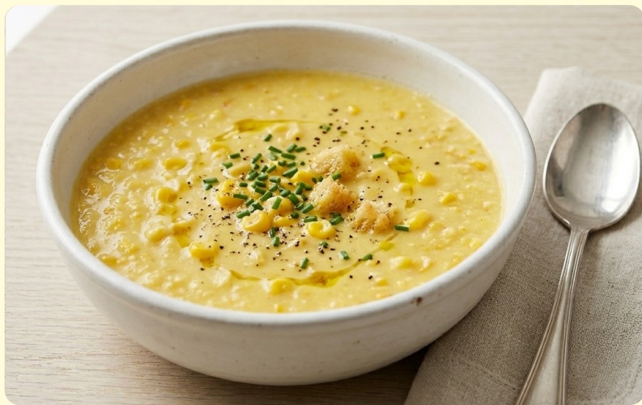
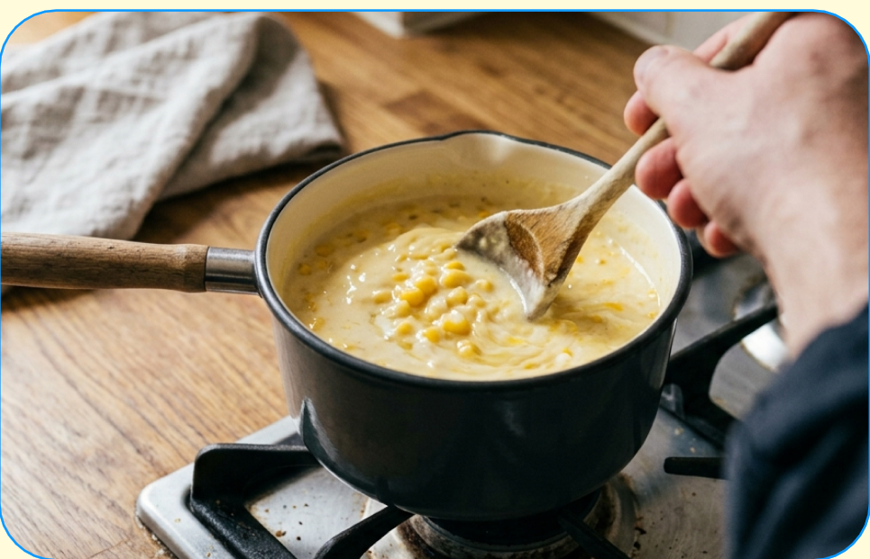
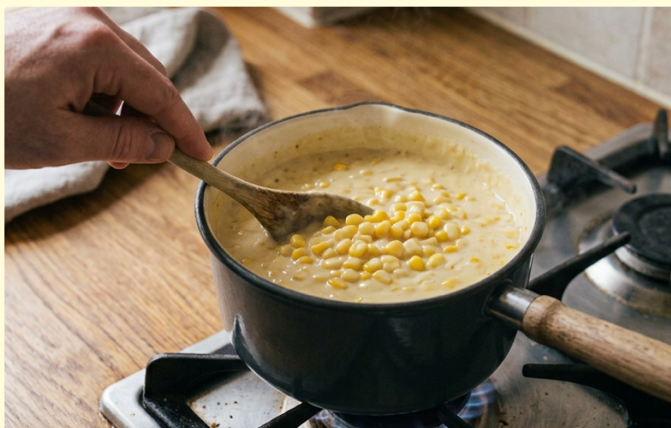
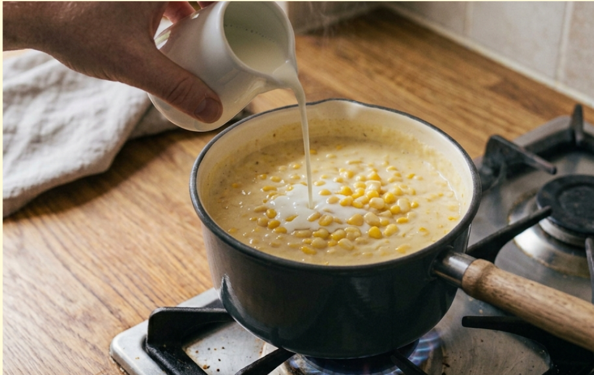
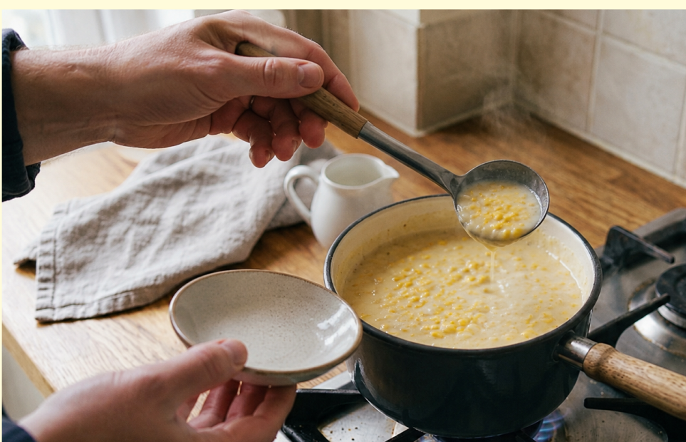
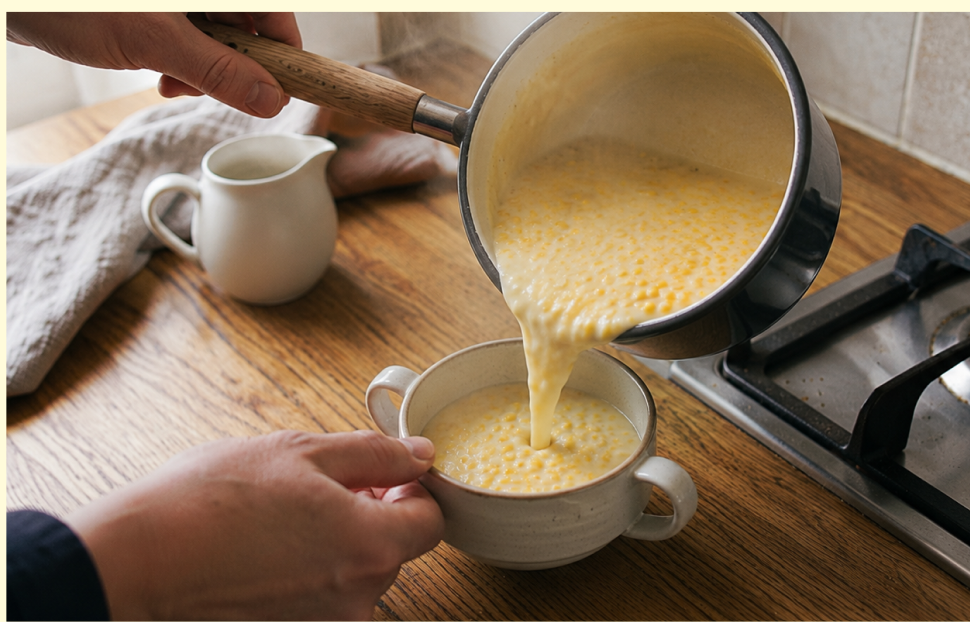

材料（１人分）
- ・コーンクリーム缶1/2缶（約90g）
- ・牛乳（代用可能）150ml
- ・しょうゆ、または塩適量
- ・バター（なくてもOK）5g
必要な道具
- ・小鍋
- ・木べら
- ・計量カップ
- ・おたま
- ・スープカップ
注目ポイント
-
 包丁を使わない
包丁を使わない -
 味見推奨
味見推奨
作り方
① 鍋にコーンクリーム缶と水を入れ、 木べらで軽く混ぜます。

② 鍋を中火にかけ、ふつふつするまで温めます。 焦げないように時々混ぜましょう。

③ 火を弱めて牛乳を少しずつ加えます。 全体がなじむようにゆっくり混ぜながら温めます。 バターを入れる場合はここで加えて溶かします。

④ 塩を少しずつ加えて味見をします。 必要ならしょうゆも加えます。 熱いので少し冷ましてから味見しましょう。

⑤ 全体が温まり、鍋のふちがふつふつしてきたら火を止めます。 スープカップに注いで完成です。

調理のコツ
牛乳は沸騰させすぎないようにしましょう。
強く沸騰させると分離したり、
ふきこぼれたりすることがあります。
牛乳の代用品
牛乳の代わりに無調整豆乳、
オーツミルク、アーモンドミルクなどでも作れます。
使用する飲み物によって
アレルゲンが含まれる場合があるので、
必ず確認しましょう。